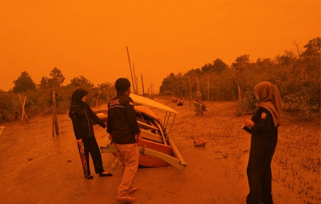

Pentingnya Edukasi Administrasi Pemerintah Desa Terhadap Masyarakat Desa Sawang Laut
Himpunan Mahasiswa Kundur Tanjungpinang-Bintan telah melaksanakan Latihan kepemimpinan tingkat II yang diadakan pada tanggal 10-12 Agustus 2020. Kegiatan ini merupakan kegiatan Tahunan yang wajib diadakan oleh Himpunan Mahasiswa Kundur Tanjung Pinang- Bintan, guna mengabdikan diri kepada masyarakat sebagaimana yang tercantum di dalam tri darma perguruan tinggi, Pada Tahun ini kegiatan LK (II) Dilaksanakan Di Kampung Halaman tercinta yakni Kundur yang terbagi menjadi 3 titik, yakni Kobel Laut Kecamatan Kundur barat, Sanglang Kecamatan Kundur barat dan Tanjung sesup Kecamatan Kundur. Adapun Peserta Dari kegiatan Ini berjumlah 9 orang yakni 5 Perempuan dan 4 Laki laki dan Saya ditempatkan di Kobel laut kecamatan Kundur Barat bersama rekan rekan saya yakni Nurmalina Juwita, Shobirin dan juga Yogi Pangestu. Senin,10 Agustus 2020 berkumpul di stadiun mini yang kemudiaan pemberian arahan dari Ketua dan wakil ketua Himpunan Mahasiswa Kundur Tanjungpinang-Bintan yang setelah itu dilanjutkan dengan pemberangkatan di tiga titik yang telah ditentukan, Untuk kelompok Kobel Laut didampimgi oleh Kakanda Randika Saputra dan Adinda Debby, dan Sesampainya dilokasi kami Disambut dengan baik oleh RT setempat serta diberikan sedikit arahan. Adapun tujuan dari kegiatan ini ialah untuk melakukan penelitian terhadap permasalahan permasalahan yang meresahkan masyarakat, pun dari pada itu mahasiswa diharapkan dapat menemukan solusi sehingga pemikiran dari mahasiswa dapat dijadikan obat sesuai dengan tema dari kegiatan tersebut ialah “ Herbalisasi Intelektual”, Sistem Penelitian yang dilakukan ialah dengan tidak memgumpulkan banyak Masyarakat mengingat Maraknya Pandemi Covid-19 Yang baru baru ini Menggegerkan daerah Kundur, Adapun penelitian yang dilakukan dengan mendatangi Beberapa Masyarakat dan juga Berdiskusi hanya dengan tokoh tokoh masyarakat setempat seperti RT, RW, Dusun, Ketua nelayan, Ketua Petani dan juga tetua di desa itu dengan tetap memperhatikan protokol kesehatan. Kobel laut yang merupakan Desa Sawang Laut ialah salah satu desa yang terdapat di Kecamatan Kundur Barat, Kabupaten Karimun, yang sebagian besar masyarakat menggantungkan hidupnya pada potensi yang dimiliki daerah setempat yakni pada sektor Perikanan atau yang lebih sering dikenal dengan Nelayan. Hasil dari sektor perikanan banyak menghasilkan ikan-ikan yang memang hidup di air yang berlumpur sehingga dapat didistribusikan oleh masyarakat sebagai mata pencaharian. Selain itu masyarakat juga memiliki inisiatif yang tinggi sehingga terbentuklah kelompok nelayan pada tahun 2016 guna mengembangkan potensi yang ada. Dibalik potensi potensi yang mampu memajukan desa tersebut, tentu tak lepas dari permasalahan permasahan yang dapat menghambat berkembangnya potensi itu sendiri, salah satunya ialah Kurangnya tingkat kepekaan pihak desa terhadap Pemahaman administrasi dari masyarakat sehingga Potensi masyarakat yang dimiliki tidak dapat dikembangkan dengan baik, itu artinya Minimnya perhatian dari pihak desa terhadap pemahaman masyarakat tentang administrasi menjadi permasalahan Utama yang menyebabkan terkendalanya perkembangan potensi yang ada di desa Sawang laut. Dari hasil diskusi pada hari kedua dan ketiga 11, 12 Agustus 2020. Masyarakat, tokoh masyarakat, Kelompok nelayan menyampaikan bahwa keinginan mereka bukan dibidang pembangunan, karna mereka menganggap percuma diadakan pembangunan jika tidak ada kaitannya dengan ekonomi masyarakat,lagipula pembangunan di desa tersebut sudah merata hanya sebagian kecil seperti jalan rusak itupun sudah masuk kedalam Musrembang tahun 2020 namun tertunda akibat pandemic covid -19 ini, untuk itu keinginan dari masyarakat kobel laut sangat berkaitan erat dengan potensi yang dimiliki seperti pelatihan nelayan, Rumah Pendingin ikan,penambatan perahu yang memang menunjang jalannya aktivitas nelayan. Dibalik keinginan dari masyarakat setempat, terdapat hambatan dalam perwujudannya, yakni Minimnya Perhatian Perangkat Desa terhadap Pemahaman Masyarakat Tentang pentingnya administrasi dalam proses perwujudan dari suatu permohonan. Salah satu bukti yang terdapat dilapangan ialah ketika kelompok nelayan meminta program pelatihan kepada pihak desa, mereka merasa pihak desa tidak menanggapi hal tersebut, padahal permohonan yang diajukan tidak sesuai administrasi yakni tidak disampaikan pada musyawarah desa sehingga tidak terdata administrasi dan tidak dijadikan dokumen untuk disampaikan pihak desa didalam musrembang. Tentu ini adalah bukti nyata bahwa masyarakat setempat kurang memahami pentingnya administrasi untuk mewujudkan suatu permohonan. Artinya Tingkat kepekaan pihak desa sangat Minim padahal pihak desa sendiri sudah mengetahui keinginan dari masyarakat walaupun belum terdata secara administrasi. Untuk itu sudah seharusnya dan sudah sepntasnya Pihak desa Peka dan memperhatikan dengan baik apa sebenarnya yang menjadi permasalahan sehingga terhambatnya perkembangan Potensi yang dimiliki. Jadi dapat disimpulkan bahwasanya minimnya Kepekaan pihak desa terhadap pemahaman administrasi yang dimiliki oleh masyarakat berpengaruh besar terhadap berkembangnya potensi yang dimiliki masyarkat desa. Karena permohonan apapun akan sulit diwujudkan jika tidak jelas administrasi yang akan dijadikan bukti selanjutnya. Untuk itu sebaiknya pihak desa lebih peka terhadap permasalahan permasalahan yang ada serta sangat disarankan untuk melakukan kegiatan yang bersifat edukasi seperti sosialisasi secara berkala guna meningkatkan pemahaman masyarakat terhadap pentingnya administrasi demi kesejahterasaan masyarakat setempat kedepannya.
Penulis: Julandari